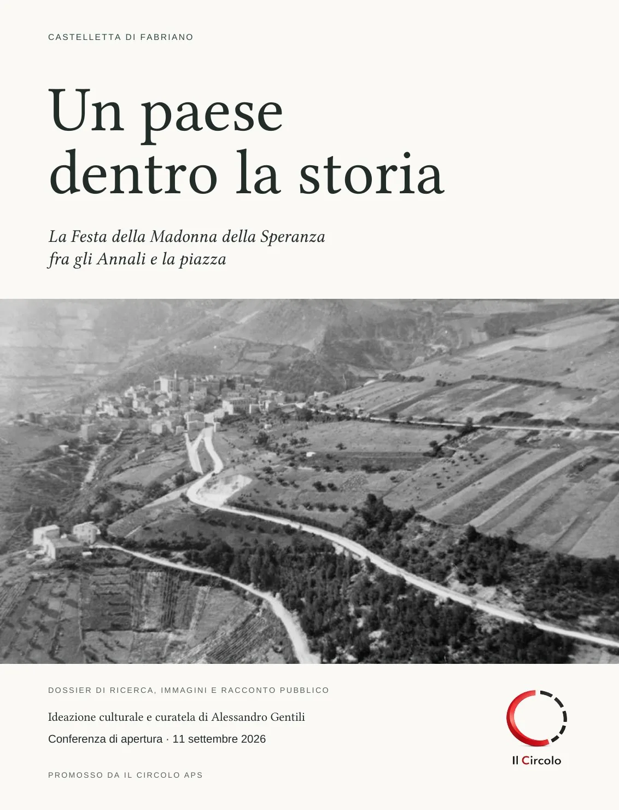
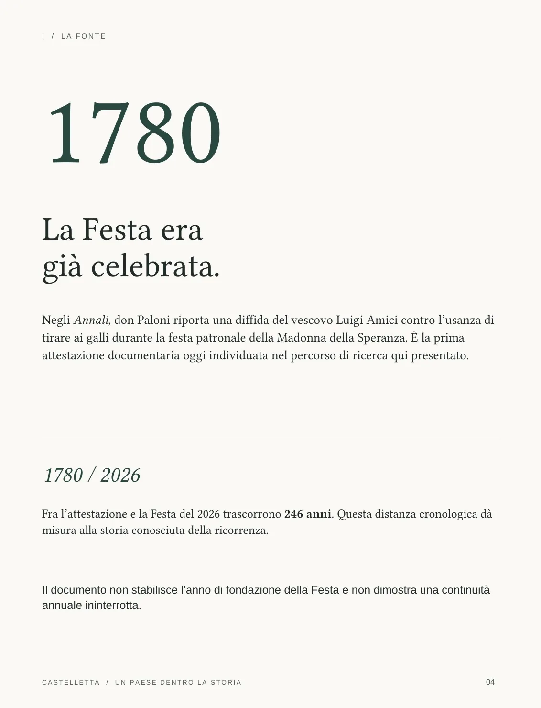
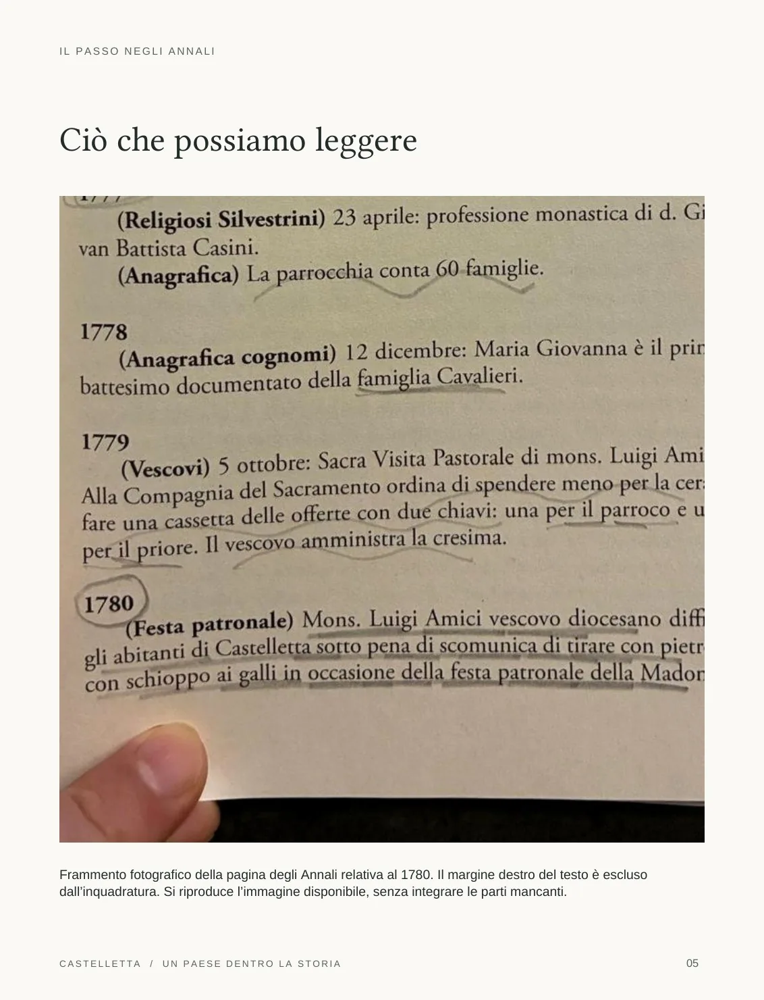
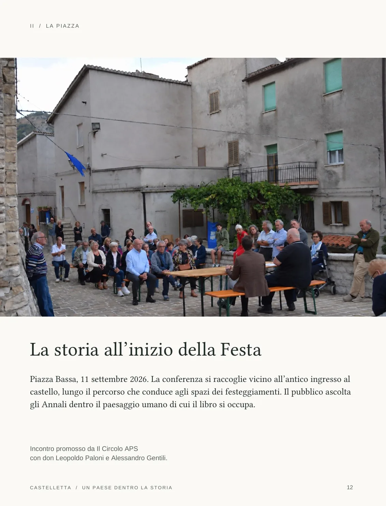
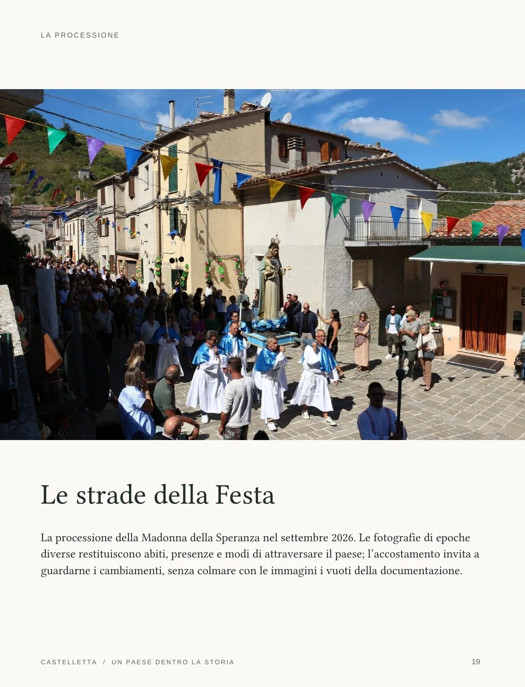
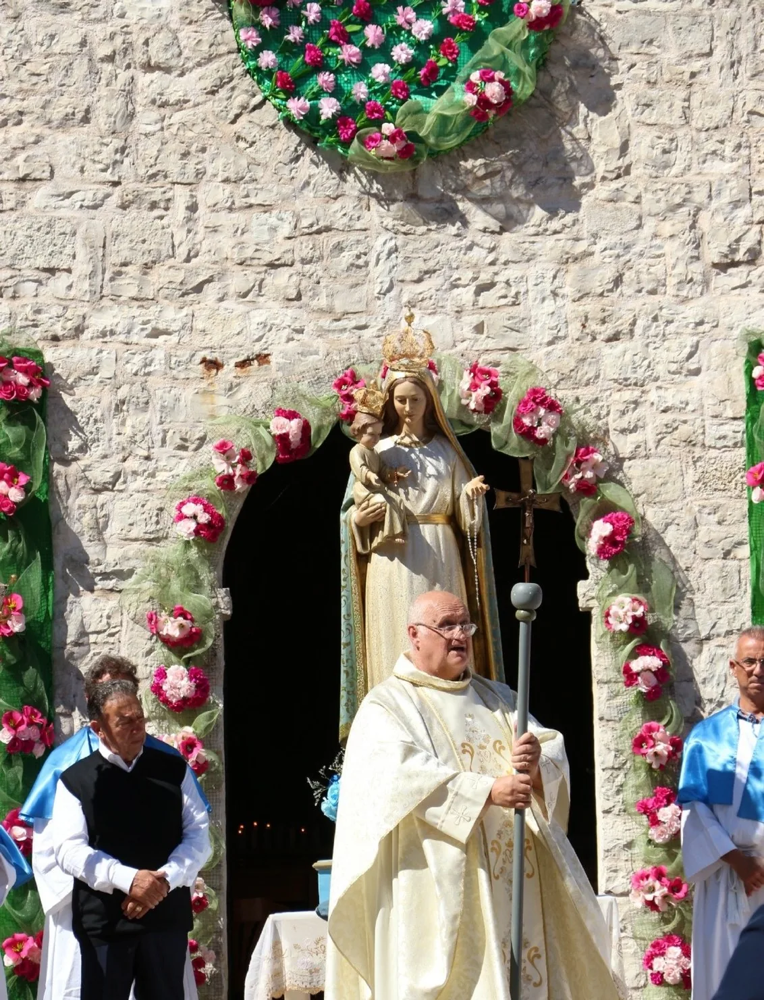
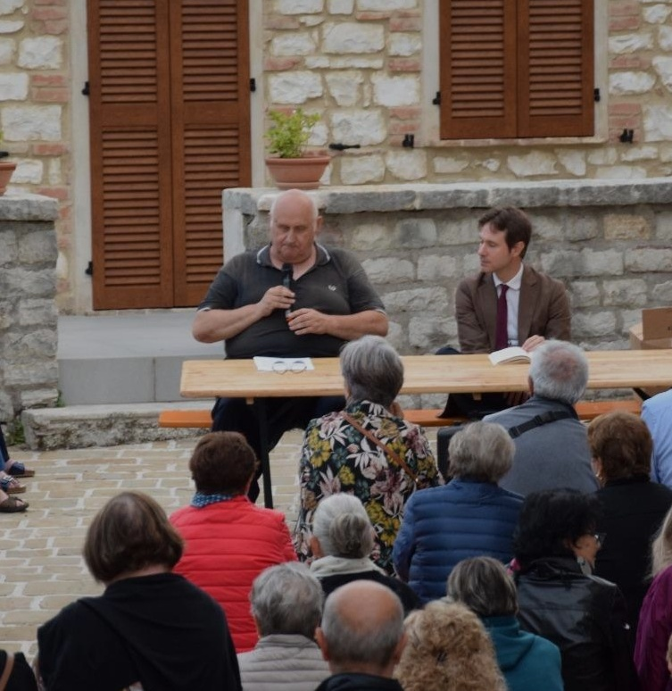

Portfolio culturale · Castelletta
Un paese
dentro la storia
La Festa della Madonna della Speranza
fra gli Annali e la piazza
Promosso da Il Circolo APS
Ideazione culturale e curatela di Alessandro Gentili

Una data, una lettura,
un luogo.
Una pagina del 1780. Gli Annali. Castelletta 1600–1899 di don Pierleopoldo Paloni. Una piazza, nel settembre 2026.
Negli Annali, una fonte attesta che la Festa patronale della Madonna della Speranza era già celebrata nel 1780. Alessandro Gentili ha riletto quel passo in rapporto alla Festa contemporanea e ne ha fatto il punto di partenza della conferenza di apertura dell’11 settembre, promossa da Il Circolo APS. Il dossier raccoglie il percorso che dalla fonte conduce alla piazza, alla comunicazione pubblica e alla memoria fotografica. Il 1780 è una soglia documentaria: non indica la fondazione della Festa né prova una continuità annuale senza interruzioni.
02 / Il metodo
Dalla pagina
alla forma pubblica.
- 01FonteLa testimonianza del 1780
- 02RiletturaGli Annali nel presente
- 03CuratelaLa conferenza di apertura
- 04Spazio pubblicoPiazza Bassa, Castelletta
- 05MemoriaIl dossier fotografico
03 / Il dossier
Ventiquattro pagine.
Un percorso da leggere.
Una selezione di tavole: il documento, la conferenza e il paese che torna ad abitare la propria storia.





04 / La conferenza
La storia entra
nella piazza.
L’11 settembre gli Annali sono usciti dalla pagina e sono entrati nella Piazza Bassa di Castelletta. La conferenza ha riunito il libro, le persone e il luogo di cui quella storia parla.

05 / Documento integrale
Il dossier, per intero.
Ventiquattro pagine da sfogliare. Su smartphone, apri il PDF per leggerlo a pieno schermo.
06 / Responsabilità
Crediti e percorso.
- Promosso da
- Il Circolo APS
- Ricerca archivistica e Annali
- don Pierleopoldo Paloni
- Ideazione culturale e curatela
- Alessandro Gentili · rilettura della fonte in rapporto alla Festa; ideazione e cura della conferenza; promozione della presentazione degli Annali, comunicato stampa e testi del dossier.
- Fotografie del convegno · pagine 12–15
- Maria Grazia Trappolini e Melania Fattorini, secondo i crediti del dossier. L’attribuzione dei singoli scatti non è disponibile.
- Altre fotografie
- Copertina e pagine 3, 9, 11: Archivio Castelletta nel ’900, secondo i crediti delle edizioni precedenti. Pagine 10 e 18: riproduzioni dagli Annali. Pagine 16, 17, 19, 21: immagini della Festa 2026 fornite per il dossier, autori non indicati.